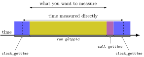

Changelog:
- 30-31 Jan 2025: attempt to rearrange task description to declutter description
- 9 Feb 2025: replace confusing
:
before nothing with.
Write a program
gettimingsin C and/or assembly to take measurements needed to estimate the time required for each of the 5 scenarios below (under the headingScenarios to time
).Your program should take one command-line argument which is a number from
1to5indicating which scenario above to produce timings for. (So we’d run it like./gettimings 1,./gettimings 2, etc.)Run your program and collect the data it outputs.
Create a file called
timings.txtwith a single overall time estimate for each of the five scenarios.Your overall time estimates must comply the requirements below (under
Requirements for time estimates
).If you needed to do any calculations (e.g. averages, subtracting something) on your program’s output to get those time estimates, then also include in
timings.txt:- the data output by your program you used to produce the estimates (or a reference to .txt or .csv file containing that output), and
- a description of the calculations you performed on your program’s output to get the overall estimates
Produce a
Makefilewhose default target (the one run bymake) will compile and link yourgettimingsprogram.Submit all the
timings.txtyou created, any data files yourtimings.txtreferences, and all your source files (Makefile, and all the C and assembly source files) to the submission site.(If your data files are quite large (many megabytes) and would be hard to upload, you may instead put it something like Box and give a link in timings.txt.)
1 Scenarios to time
calling an empty function (such that the function call is not optimized away) and having it return
running the
getppidfunction from<unistd.h>(this is not the same asgetpid)running a
system("/bin/true")(which runs the command/bin/truein a shell) [or if you are on a system where/bin/truedoes not exist, but/usr/bin/truedoes, you may usesystem("/usr/bin/true")instead]sending a signal to the current process and having its signal handler start executing (but not including the signal handler returning)
sending a signal to another process, then having that process’s signal handler send a signal back, then either:
having a signal handler for signal sent back start executing in the original process (but not including the signal handler returning); or
identifying that the signal was sent back in the original process using a function like
sigwait
For scenario 5, we need to run two copies of your program, similar to the signals lab:
- The
other process
(the one not sending the first signal) we should be able to run as./gettimings -1. It should print its PID and read a pid from stdin. - When we run
./gettimings 5it should print its PID and read a pid from stdin. - We will test by entering the PID of the
./gettimings 5process into the./gettimings -1process first, then entering the PID of the./gettimings -1process into the./gettimings 5process. - (It’s okay if we need to use control-C or similar to terminate
./gettimings -1process.)
2 Requirements for time estimates
The overall time estimates you report must:
- have been produced using a program compiled with some optimizations
enabled (at least
-Ogor-O1or-Osor similar) to avoid timing the very awkward assembly clang or gcc generate when all optimizations are disabled; - make an attempt to account for any measurement overhead (that is,
the time unintentionally included in raw timings not used to do the task
being timed but instead to obtain clock measurements, setup the task,
etc.) One strategy might be to measure the time required for
nothing
and subtract this time from other measurements. See below for more discussion on how to do this. - be based on measuring multiple instances of the each scenario to obtain your estimate for that scenario (to limit the impact of variation in system performance on your estimates)
3 Hints
3.1 Timing APIs
Since we are timing very short events, you want some function that can obtain high precision time measurements.
3.1.1
clock_gettime
One way to do this on Linux is using clock_gettime:
struct timespec t;
returnvalue = clock_gettime(CLOCK_MONOTONIC, &t);will, when successful, set returnvalue to 0 and
t.tv_sec to a number of seconds and t.tv_nsec
to a number of nanoseconds. When unsuccessful, it will set
returnvalue to -1 and errno (or
utility functions like perror) can be used to obtain
information about the error.
On macOS X,
clock_gettimeexists, but (at least in the versions I have looked at with CLOCK_MONOTONIC and CLOCK_REALTIME) it is only accurate to the nearest microsecond (even though it reports its result in nanoseconds).
CLOCK_MONOTONIC specifies to use a timer that starts
around system boot. There are also other clock options like
CLOCK_REALTIME (measures seconds since 1 Jan 1970 midnight
UTC).
In order to use clock_gettime, use something like
#define _XOPEN_SOURCE 700 before
#includeing any files then
#include <time.h>. (The #define requests
that header files make features from the X/Open Single Unix
Specification available to you.)
An example utility function for using this is:
#define _XOPEN_SOURCE 700
#include <time.h>
...
/// returns the number of nanoseconds that have elapsed since an arbitrary time
long long nsecs() {
struct timespec t;
clock_gettime(CLOCK_MONOTONIC, &t);
return t.tv_sec*1000000000 + t.tv_nsec;
}3.1.2 the cycle counter
x86-64 has a per-core Time Stamp Counter
which can be accessed
with the assembly instructions rdtsc (read time stamp
counter) or rdtscp (read time stamp counter and processor
ID).
rdtscp sets %edx to the upper 32 bits of
the 64-bit time stamp counter, %eax to the lower 32 bits of
time stamp counter, and %ecx to a ID number that should be
unique to the core. The timestamp counter starts counting roughly when
each core starts, but it may count at slightly different rates on each
core, so you should not attempt to subtract numbers from two different
cores.
Without writing assembly, GCC and Clang expose these using some
built-in wrapper functions declared in
<immintrin.h>:
__int64 rdtsc();
__int64 rdtscp(int *pointer_to_core_id);where __int64 is most likely the same as a
long on 64-bit Linux. The cycle counter is in units of
clock cycles (not seconds or similar). On systems with variable clock
rates used for running instructions, often the time stamp counter will
be based on clock cycles of a special constant rate clock rather than
the clock used by each core to run instructions.
3.2 Obtaining and consolidating multiple measurements
There are several reasons why measurements will not be consistent:
- code or data may be loaded into memory and caches the first time it is run;
- processors may vary the clock rate they used for executing instructions (based on, e.g., temperature or power saving goals);
- other things on the system may interfere (for example, the operating system handling exceptions or moving the timing program to another core)
To mitigate this, usually one would:
- take many timings and then compute an average and/or minimum and/or standard deviation and/or other statistics of your raw measurements
- time a loop with many iterations of the event and divide the time
- take timings after a significant number of
warmup
runs to allow the processor to load data into caches and decide on a hopefully stable clock speed
(For how many timings, a possible rule of thumb is to take at least enough timings to take half a second of real time.)
3.3 Avoiding measurement overhead

Whenever you time something, in addition to timing that something you
will also end up timing some of your timing code. For example, in the
timeline diagram above, comparing the two results of
clock_gettime calls measure getppid and also
part of clock_gettime and the code that called
getppid and clock_gettime. Because
clock_gettime and other time reading functions can’t be called
instantaneously, your raw time measurements will always include the time
for some extra
stuff. To compensate for this, I would recommend
timing nothing
(just running your timing code timing an empty
block of code) and subtracting this from your other timings. Note that
nothing
has to be, in fact, nothing to make the overhead
subtraction valid.
In addition, the amount of overhead is generally lower when you
compile with optimizations (for example, -Og or
-O1) and (when timing) without enabling slow debugging
features like -fsanitize=address, so I would recommend
trying to do so. Keep in mind, however, to enable optimizations, you’ll
need to keep the compiler from doing optimizations that eliminate the
things you are trying to time. The ideas in section 2.4 can be helpful
for this.
3.3.1 Negative times from overhead
Sometimes students get consistently negative times after attempting to subtract overhead. Usually I think this is the result of issues like:
not eliminating differences in the environment your overhead measurements come from and the environment your
real
measurements come from. For example, if they have loops that require different amounts of work to keep track of the loop indices, or if the compiler produces better assembly for one than the other.As part of trying to eliminate these differences, one thing I’d recommend is trying to enable some compiler optimizations so the compiler does not keep all values on the stack. Because of caches, the speed of memory accesses can vary based on how things are laid out in memory, but accesses to registers are more consistent. (As mentioned above, unfortunately, you may need to do extra work to make sure the compiler does not eliminate code you are timing that apparently
does nothing
to speed the program up.)not repeating measurements of overhead enough times to discount
warmup
effects (where the measurements will be slower the first few times they run). For example, if the overhead measurement needs to spend extra time loading the code for reading the clock into the processor’s caches (fast memories).
If you you make an significant effort to eliminate/diagnose
measurement errors that would cause a negative time and still have a
negative time and you report it accurately when you report your results,
that is fine. In some rare cases, these results could be real
due
to how modern processors work:
Because processors try to run multiple instructions at a time, in
some unusual cases, it might be possible that something that takes a
very short amount of time runs entirely simultaneously with your timing
code around it and so takes no
time. In other unusual cases, it’s
possible that relocating or making apparently inconsequential changes
the timing code speeds that code up slightly (due to arranging code or
data on the stack in a slightly better way in memory, etc.).
There are ways to avoid instructions overlapping (by including instructions that the processor manufacturer designates to prevent this; see, for example, this Intel document) to make sure you are only timing the task of interest and not how it interacts with instructions around it, but that is not required for this assignment.
3.4 Compiler optimization and function calls
I recommend turning on compiler optimizations to avoid measuring slow code for setting up system calls and the like. But, when timing a function call, you may have problems with the compiler’s optimizer replacing a function call with the body of that function. Some possibilities to avoid this:
- write the function in a separately compiled file, so the compiler will not have the information to do this optimization
- write the function call itself in assembly file, so it won’t be subject to the compiler’s optimizations at all
- make a C function marked with the
__attribute__((noinline))before its return type and put__asm__("")in its body. Thenoinlineattribute will tell Clang and GCC that they cannot copy the function’s body rather than calling the function. The inline assembly will tell Clang and GCC that calls to the function cannot be omitted even though the function does not appear to do anything.
3.5 If sigaction or
sigset_t is not defined
If you compile with -std=c11 or similar, , this requests
only C standard functions by default, and <signal.h> is part of
standard C, but includes only a limited set of functions/types (not
including most of what we discussed for signal handling).
You can request the full set of Linux/Unix functions (despite using
-std=c11) by using a feature test macro
like
#define _XOPEN_SOURCE 700 before including anything (or,
equivalently, by compiling with an option like
-D_XOPEN_SOURCE=700). This #define requests features from
X/Open System Interfaces associated with the POSIX.1-2017
standard.
There are similar feature test macros that request slightly different
sets of functionality; Linux documents all of these in the
feature_test_macros
manpage.
3.6 Timing the signal handler
When sending a signal to the current thread,
kill() is guaranteed to return only after the signal is
delivered. (This is not guaranteed if you send to
another process.) If you want to avoid specifying the process ID, you
can also use the function raise() [which can only send a
signal to the current process] instead of kill() [which can
send to any process].
3.7 Timing receiving a signal back
3.7.1 Need to wait for signal
If you send a signal to another process kill() can and
often will return before the signal is handled, so you can’t just call
kill() the appropriate number of times. Also, if you send
the same signal twice to a process before it is handled, then the signal
may only be handled once.
3.7.2 Missing signals coming back
The last timing task requires waiting for a signal to be received by your current process. The naive approach of:
send_signal_to_other_program();
/* MIDDLE */
wait_for_signal();has the problem that the signal can be received at MIDDLE
and
lost
. To avoid this problem, some approaches for doing this:
block
the signal temporarily withsigprocmask, then usesigwaitto wait for the signal instead of installing a signal handler- install a signal handler that finishes timing and have it set a flag
in a global variable that is checked in a loop that calls something like
nanosleep, similar to checking foroutbox[0]to be 0 in the lab.1 - install a signal handler,
block
the signal temporarily withsigprocmask, then usesigsuspendto briefly unblock the signal2 and wait for the signal handler to run - install a signal handler that uses a function like
siglongjmpto continue execution of the post-timing code and callsigsetjmpbefore running the signal handler.sigsetjmpandsiglongjmpwork very similar tosetjmpandlongjmpwith are described in thesetjmp, longjmp, and software exceptions
section of the kernel reading. Have the code that waits for the signal handler to run call a function likepause()to avoid wasting CPU time beforesiglongjmpruns. (You can also use the plain version ofsetjmpandlongjmpprovided that you restore the signal mask afterwards with a call tosigprocmaskor register the signal handler with the SA_NODEFER flag.)
Blocking
a signal ensures that the operating system will not
deliver it (that is, will not run its signal handler), but blocked
signals will still be recorded as pending
(that is, needing to be
handled at some point). In documentation, you may see the set of signals
a process (or thread) has blocked referred to as the signal
mask
.
4 Collaboration
As with most homework assignments, this assignment is to be completed individually.